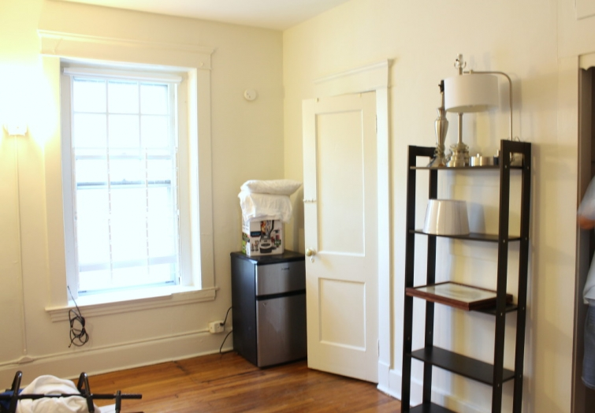
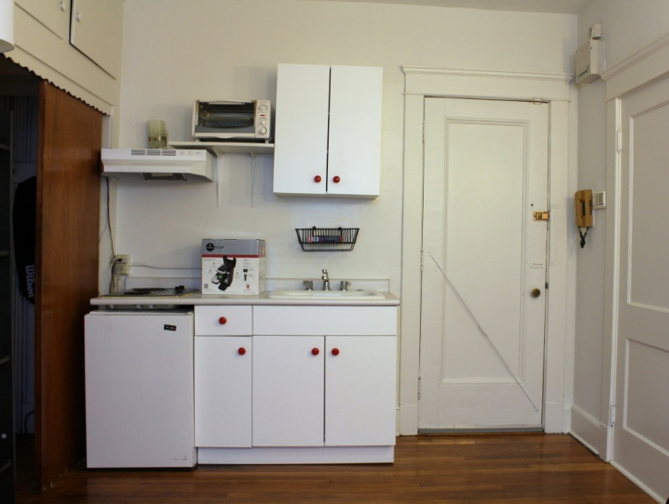
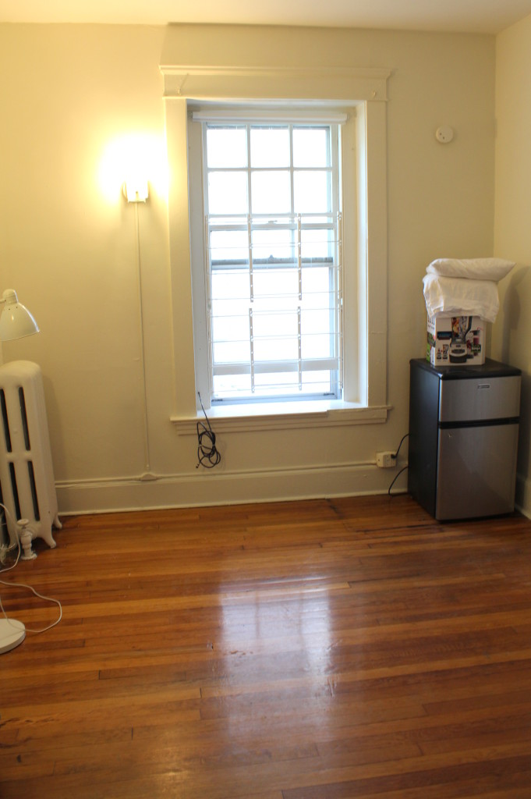

.png)
.PNG)
.PNG)
.PNG)
.PNG)
.PNG)
.JPG)
.JPG)
.PNG)
.PNG)



A number of readers have asked me several times to explain the process I use in doing a room from start to finish, so today I want to do just that…take you shopping with us and explain my thinking on our choices. It literally took the entire road trip to furnish our son’s apartment. It is still not quite finished, but I can show you what we have done. It’s close. 🙂
***
When Jonathan informed us last winter that he had signed a lease on a 180 sq. ft. apartment a couple of blocks from law school, I had a hard time visualizing the space (especially since he did not take any photos of it! 🙁 ) So I really did not know what to expect when we walked into that room on Chapel Street, but it actually had a number of good things going for it (if you could wrap your head around the diminutive space.) First, it was clean. Secondly, it had a decent sized closet with a bonus storage space built in above it and a sturdy large wooden step stool to reach it. We jokingly called the extra storage his “attic.” 🙂

It had beautiful wood floors (no nasty carpet!) It had interesting architectural trim, and the room had just been newly painted a nice neutral cream color. I was dying to paint all that wonderful trim a contrasting glossy white though to make it stand out. (I didn’t.)

The previous tenant had left behind a bookshelf, (in the top photograph) an additional dorm refrigerator, and a metal floor lamp. We had not packed a lot of things for the apartment. Our little suv was filled mainly with books, (and more books!) kitchen supplies, a few lamps, two framed vintage fish prints (the only art of which he “approved”) all of our son’s clothing, a down comforter, and his camping gear. (Doesn’t everyone take camping gear with them to law school?? 😉 )

The first night there we simply unloaded everything, measured spaces and windows, and made shopping lists. The next morning bright and early we did what every college family does….we headed to Ikea. Thank goodness there was one a 15 minute drive from the apartment!
I took a couple of “extra” photos for you so that you could enjoy their model kitchens. 🙂
Okay, the original plan had been to get a desk, a desk chair, a futon and a loft bed that the futon would sit under. The thinking on all of this was What would be the most functional items – yet still allow for comfort? Unfortunately, the futon that was on sale was out of stock, so with budget in mind, Jonathan ended up choosing a more expensive one – the Beddinge Lovas – and he did not get a loft bed.
When I am doing a room, I normally find something that gives me a direction. It might be a fabric or some unique accessory or a favorite color. At this point, we were starting totally from scratch with our son’s apartment, but because he/we chose the gray cover for the futon, our color scheme finally had a starting point from which we could build.
Our son did not think he had room for a table and a desk, so the desk won out on that purchase. He chose the dark gray Alex desk with space to manage the cords.
Because he would be spending a lot of time working at his desk, (and eating there) and he has a shoulder that gives him trouble, he wanted to find a desk chair that was well built and provided good support. After playing Goldilocks in every chair in the store, he settled on the Markus swivel chair….in gray.
At this point I said that he needed an end table of some sort beside the futon so that he would have a place to sit snacks or a tv remote or books, and we both agreed that it did not need to be gray. Because the knobs on the kitchen cabinets were red, I suggested red, and we began to search for a red end table or cabinet of some kind. We were having no luck finding one in our price range when I remembered seeing a child’s play table set in red in the Atlanta Ikea, so we headed to the children’s play furniture and found one for $25. Perfect!
Because I was afraid that there would not be enough room in the car, I told my husband and son to just leave me at the store for more shopping and for them to take the large furniture items back to the apartment. They did just that, and while they were gone, I searched for a rug, drapes, throw pillows, and a duvet cover in either gray or red. (All the fun stuff. 🙂 ) When they returned, we agreed upon this rug…
I showed our son this duvet cover for the comforter his grandmother had purchased for him,
and he said, “No way. That looks like I’m at home.”
(So true!)
We did agree on this one:
I then told him that he had to add more red, so we picked up a red throw and a couple of red throw pillows. As we were wandering around the store, we came upon this oversized floor lamp, and we both immediately LOVED it. It was quite impressive.
It reminded me of this one at Restoration Hardware
(at a much better price!)
This was a splurge but soooo much better than the little metal one that had been left in his room. We also found a table lamp and a desk lamp that were vast improvements over the ones we had brought from home, so we got them as well. The lamps from home came back to the house with us. I am sure our daughter will use them when she moves to another apartment next year. (We also brought home the fish prints. You’ll see why in a minute.)
Our son does not like drapes, but he really liked the Roman shades at Oakhurst Inn. Unfortunately, you can’t exactly find custom made Roman shades at Ikea for a 40” x 72” window. 🙁 So we decided to wait on that. We took all our purchases back to the apartment, got some lunch, and then made a run to Target for a vacuum cleaner and a zillion other utilitarian things. The rest of the day was spent with my patient saint of a husband doing this….
He and our son had to assemble all of the furniture plus all of the lamps. Not their favorite thing to do. I unpacked all the kitchen items, got them into the few cabinets there, and set up the bathroom things. Late that night, everything was finished and in its place. Functional, but not decorated.
The next day we left New Haven and headed to Maine to start the vacation part of the journey. If you have been following along on our road trip this month, you are going to see how it helped to finish our son’s apartment. 🙂 First stop? L.L. Bean in Freeport, Maine.
I found this pillow in the L.L. Bean Home Store, and knowing how our son loves dogs, and the fact that it was red, I crossed my fingers that he would like it. He was over in the flagship store, so I called him to come take a look. Hallelujah he liked it! I then had a direction for accessories. Yes!
(L.L.Bean does not sell it online, but you can order it here.)
After Freeport, we headed to Whitehall in Camden, Maine with a day spent driving through Bar Harbor and Acadia. On the way to Acadia, do you remember we stopped at that fabulous Rooster Brother kitchen shop? Their outlet room was where I found this cute jar for his kitchen (to put the cookies in that we mail him. 🙂 ) I also decided that he needed to replace the hanging dish drain in that apartment with a metal shelf for more storage space… more on that later.
A day exploring the shops in Camden led me to these goodies at the wonderful Jo Ellen Designs. They were going on that red end table.
After Camden, we traveled to Stowe, Vermont. Remember Juniper…that precious paper and gift shop? Our son bought postcards there…not “dog related,” but they had red in them. Here is what I did with them for his apartment. (Sorry for the very blurry photo.)
And after Stowe and Waterbury we returned to New Haven, and that brings us back to where we are in this post now…full circle. I had been thinking about the lack of storage space for food in our son’s apartment while we were traveling. So we made another run to Ikea that night for a piece of furniture to handle that and a metal shelf for the kitchen. While there, I found another piece of art – perfect for the space. (Another fuzzy photo. 🙁 )
The next day we made another run to Target for picture frames and a few office type supplies. The Ikea storage piece was assembled, the artwork framed and hung, the shelf hung and put to work, and we called it a day. Would you like to see the almost-finished-functional-but-not-decorated-tiny-apartment? 🙂
Behind the door is this kitchen cabinet.
Here is the entire kitchen. I really wish I had hung a piece of stainless steel above the stove for ease of cleaning. (But who knows how much actual cleaning a student in law school really does?) Yes, the microwave is high, but there is no counter space for it, and his step stool is wide and works fine for it.
Our son put the bookshelf inside the closet to hold all of his books. The storage cabinet for food took its place in the room. If I could really decorate the space, I would hang art over that television. (All the red things are really red, not orange like the light plus camera makes it look here.)
Here is the desk area:
The small red end table…
And now the only “decorated” wall in the apartment. The striped pillows are actually our son’s bed pillows in the pillow cases that go with the duvet set. You can see how the road trip provided the accessories for the space. As our son gets bogged down in school work, I hope his apartment will be a reminder of our fun vacation (and of more good times to come. 🙂 )
If you have read all 1600+ words here you deserve an A+. 🙂 I hope this written thought-process has helped to explain how I go from a color and an idea to a room. Obviously, it helped to have a blank slate to begin with, but I have tweaked rooms in the same manner starting with colors and objects that are loved…think about the function of the room and go from there.
Our son’s apartment still needs a window treatment. As I mentioned, he really admired the Roman shades at both Oakhurst Inn and at Whitehall, so I am going to make some for him out of a gray print or stripe (although a red print might be good…still thinking on it.) Hopefully, this will work for the space. (The bathroom window is teeny-tiny!)
I have a couple more road trip posts that are really really house related. You are definitely going to want to be here for this. After we told our son good-bye in New Haven, my husband and I traveled here the next day:
This one will have to be a two-part post with the 500+ photos I took there. 😉
Until next time…


.PNG)
Well done Kelly!!! I have to admit, I am not sure I would have even known where to begin with the space. Making it function well FOR EVERYTHING was not easy I know. It looks SO AWESOME! I love the color choices…..and his comments about his place being functional NOT DECORATED cracks me up!!! Sounds like my son! But I know when he takes a look at his place he JUST HAS to thrilled his mama helped because it looks trendy and amazing! Hugs to you!
————————————————————————
We had to start with “function” first because with a space that small, every single item really counts. We knew a desk and bed of some sort had to be the first items chosen. We started looking online for those items before we even left. I really wish I had had photos to see it before we got there…and window measurements. I could have made a window treatment for him, and we could have chosen furniture from colors in that. Oh well, it all worked out in the end. Thank you so very much for the compliments on the room! It was a lot of work, but well worth it. 🙂
Kelly
Oh my you trained your son well. My son’s apartment looked like the recycling bin met the dump when he was in college. He will make some lovely lady a great husband!! And she will love you for training him so well! Mind did come around by the way…just not so quickly…hats off to you!!
———————————————————————
Oh..our son is not trained well. He would never ever make up a bed if allowed to live that way. His argument is you are going to have to un-make it to sleep in it at night, so why bother? I think being able to pick out his pieces with a color scheme in mind helped to make it all work. Glad to know your son “came around.” I think living in an organized and clean environment actually makes you accomplish more…makes it easier to find things more quickly. Maybe our son will come around to that line of thinking one day. 🙂
Kelly
PS. just finished browsing thru you trip posts, I just did a post on the trip my sister and I took to Bar Harbor a year ago last May, (I’m a bit behind in my posting) and we stayed at the Bar Harbor Inn, it was fantastic! We had the best time there, so beautiful! We flew into Boston and traveled up to there stopping in so really fun places. It was always my dream trip to go to New England. We started in Hanover, New Hampshire, where her daughter went to Dartmouth. It’s one of my favorite places, the town looks like a village from a movie! If you get a chance to visit there, it’s worth it!
Rebecca
———————————————————————-
You stayed at a lovely place! I will have to add Hanover to our stops on our next trip to New England. Sounds like our kind of place!
Kelly
Kelly,
your son’s apartment is adorable (not that he would like to hear it described that way)! The grey and red is perfect “guy” colors.
You were lucky to have an Ikea close by, we have to go all the way to Atlanta if we want to visit one. I’ve helped my daughter and son decorate both their houses when they moved in, mostly from yard sales and things I’ve gotten on sale. They have formed a new appreciation for my “junk” as they were used to calling it,
especially since all their friends have told them how much they like what’s been done!
Rebecca
———————————————————————-
I’m glad you liked the apartment Rebecca. The gray and red worked out really well together. Ikea certainly came in handy! At home, we have to go all the way to Atlanta too for our store. “Junk” is often good when furnishing places. Mary Kay Andrews is the queen of putting great junk to use in her houses. Love what she does with it!
Kelly
Wow! You did a great job of decorating your son’s apartment! My son did not go to law school but he did take his camping gear to college (must be a guy thing). Also, I love that that ‘vintage’ corded phone on the wall!
————————————————————————
Thank you Julia! I am glad to know that our son is not the only one who takes camping gear to college. 🙂 It MUST be a guy thing. 🙂 That was a very old phone on the wall and used for buzzing in guests to the building.
Kelly
Your son’s room looks great! I love all the red accents too! Amazing job as usual! Looking forward to reading your next post and all the pictures that will accompany. Lots of greenery surrounding that house! (we are getting snow tomorrow)!!!
———————————————————————
Did you get snow? When my husband was out west a couple of weeks ago backpacking with our other son, he visited Banff and some other places and they had to be mindful of snow. Seems crazy when our temps here are mid-eighties! Thank you for your sweet compliments on our son’s room. You can’t go wrong with red, right? 🙂
Kelly
I bet your son is so thankful to have your decorating skills. I can’t think of another college place that looks so good. You did a good job letting him keep it manly but stil decorated. It looks great 🙂
———————————————————————-
I wouldn’t say our son is thankful for decorating skills….He more like “tolerates” it, but he did really like how the apartment turned out. So that was the important thing. I think it turned out about as well as it could with his “restrictions” on me. LOL
Kelly
Beautiful and inspiring! I may have to go home and clean my house and run to the NEW IKEA in St. Louis to see what goodies I can find. Are you enjoying retirement? Some day…
——————————————————————–
Thank you Susie! I hope you have been to the new Ikea to see what all they have. It can be overwhelming! (especially our Atlanta one.) Retirement is busy busy busy. I have no idea how I fit in a real job before! LOL
Kelly
This is just such a wonderful post, Kelly! To share your thought process, each step and the finished result was just fabulous to read – and lots of photos and info 🙂 LOVE the framed menu 😉 and how you used not-made-for-framing items to frame and create artwork and a sense of your son’s tastes and experience in the room. The dog pillow is fabulous – still thinking about the one with the stars at L.L. Bean and on the site you shared. So great for so tiny a space – you really have an eye!!! I miss IKEA here as the closest one now is up in D.C. So glad to be along for your trip and decorating!!! What comes next??? Happy October and Happy Trails!
————————————————————————
I’m so glad you liked the lengthy post Mari! A small space really forces you to look at how you are using all the pieces in it – sometimes having them do double duty. Our Ikea in Georgia is over an hour from here, so we do not get there very often (normally when I am in need of fabric.)
Happy Fall!
Kelly
Yes, I get an A+ for reading all the post. Your son’s apartment turned out beautifully. Thank you for this inspirational piece. Have you thought about a Roman shade in a red and gray stripe combined. Although, God did not bless me with a decorating eye and talent like you. You are wonderfully blessed. I have been away from the blog for a little while and have thoroughly enjoyed getting caught up.
——————————————————————–
Yes, you DO get an A+! 🙂 And I think your suggestion of a red and gray stripe for his window treatment is an excellent one! I will be on the lookout for a fabric like that – especially since it would pull in the red along with the predominant gray. I’ve missed your comments around here. So glad to have you back. 🙂
Hope you are enjoying this weekend.
Kelly
Beautifully done! I was curious, what is in the bottom of the window? an a/c or an air purifier? it wasn’t there at first but in the last pictures it is and it looks perfect for the size of the apartment.
Thanks for sharing this great adventure!
Susan
———————————————————————-
It is an air conditioner, Susan – a very much appreciated one! They don’t normally have real high temps there in Connecticut, but we happened to be there at a time when there were high temps with high humidity, and the window fan didn’t really help a lot. I asked the landlord if he “happened to have an a/c unit lying around somewhere” not thinking he really would, and he had us one in and running in 30 minutes! Now that is service! Great landlords for that building! (A big part of why our son chose it.) You really notice the details to catch the window unit! LOL
Kelly
Great job Kelly! It looks fabulous- cozy and very functional! I’ve enjoyed all of your vacation posts. Loved this armchair travel through New England!
———————————————————————-
Thank you for all the compliments Barbara! I am glad you have enjoyed the virtual vacation with us. 🙂
More to come. 🙂
Kelly
Kelly, you did an amazing job! My favorite things are the dog accessories. I just finished helping my son with his very similar apartment. It was challenging but fun. My son has wood floors but not nearly in as good of condition as your son’s. I love Ikea. Unfortunately we don’t have an Ikea nearby. TJ Maxx was my source for help. Your son is going to love his space. And, as DiAnne (my dear friend) says….he will always remember the time and the love you put into this apartment. Great job, Kelly! (Who wouldn’t read every word of this post!)
———————————————————————
Thanks Kathy! Another dog lover! Yay! TJMaxx is great help for decorating on a budget. I wish we had ventured to a Homegoods, but I don’t even know if one was close. I am glad your son had wood floors in his apartment – even if they weren’t in great shape. Dirty old carpet just really creeps me out! (I’ll take messed up wood over that any day. 🙂 )
Happy Saturday!
Kelly
Just ONE question: Will you adopt me??? You are so amazing.
———————————————————————
Oh you gave me a good giggle with that one Mary! 🙂
Happy Weekend girl! 🙂
Kelly
Kelly,
I really like how functional your son’s apartment is but it has such personal touches. My favorites are the cookies jar and the doggie pillow. I love dogs (especially boxers)! The idea of using the kids table an in table is genius. Thanks for sharing. Take care.
——————————————————————–
Thanks Dawn! Functional and decorated a little. 🙂 A filled cookie jar is a good thing. (Now I sound like Martha- LOL) The futon was low enough that the kid’s table worked out perfectly in that location. Thank you for your always encouraging comments!!!
Kelly
Tiny apartment, yes, but decorated by a big-hearted mom and dad. Everything looks really good. I love the special touches. He will have great memories to last a lifetime. My son still remembers his first college apartment. I smile every time he has mentioned it. Back to your empty nest! Can’t wait for the next post.
Sherry
———————————————————————
I would give more credit to the patient dad for assembling soooo many Ikea pieces with their crazy “pictures only” assembly directions. Enough to make anyone crazy! Thank you for your super sweet comment Sherry. I hope our son has fond memories of this place (and that it keeps him warm through the winter there!)
Happy Weekend!
Kelly
What a fabulous job on such a small space! I love the color scheme and feel of the apartment. How fun to pull everything together from all the different stores and places you traveled to. It even has that “collected” look designers strive for. 🙂 I love the pops of Red, the dog accessories and how ingenious to buy the child’s table. When our daughter moved in her first apartment after college we shopped for several pieces at Ikea. They held up well, because she just sold several pieces of her’s and her husband’s stuff on Craig’s List before their big move to Charlottesville on Friday!! 😀 The house at the end of your post looks like a Southern Living show house. 🙂 Can’t wait to see.
——————————————————————–
I’m happy to know your daughter’s pieces held up well to use. You always worry about that – especially with Ikea when you know their low price. Dog accessories seem to be everywhere – or maybe I am just noticing them more lately. 🙂 Thank you for the compliment on the “collected look.” We certainly did “collect” everything on the road trip! And yes, you are right…the house is this year’s Southern Living Idea House that we toured on the way home. Good eye Gina!
Happy Weekend. 🙂
Kelly
Such a fun post. You guys did a great job. You’re right…that apartment had great bones.
——————————————————————-
So glad you enjoyed the super long post Julie. It helped tremendously that it had wood floors. That makes a MAJOR difference to me.
Kelly
Looks great! I am a dog lover too so am excited to see the dog themed accessories. Thanks for sharing.
——————————————————————–
Thanks Dana! There are soooo many good dog accessories out on the market right now. It was hard not to scoop up everything we saw. (There are some gorgeous dog things in Pottery Barn this fall!)
Kelly
I LOVE WHAT YOU DID! Such a cosy, happy spot for your boy!
——————————————————————–
Thank you so much Mary Ann! I am happy you like it. 🙂 It turned out much better than I was afraid it would with the directive “functional not decorated.” Ha!
Kelly
Good job Kelly! It is functional and attractive. The red worked out so well plus, it has to make him feel like home. (without the checks) With the added bonus of memories from your trip.
I wish him well in law school.
You did an amazing job posting on your trip, what’s next!
Thanks,
Cindy
———————————————————————–
Cindy, thank you for your sweet comment. I think we did a good job making it functional for him as he asked. (Yes, I was quite happy to add a bit of red to it. 🙂 )And thank you for the well wishes for our son. He can use all the help he can get!
Next is a fun post on a gorgeous house. Hope to have it out tomorrow…if our internet gets restored. If not, I will have to wait until the weekend.
Kelly
Fantastic! My daughter has her first post-college apt. this year and she’s working with not one but two freebie sofas that don’t match each other … next year I’m going to push her even harder to go to Ikea to start off with stuff that’s cohesive. Do you think you came in with a total price much under a thousand dollars? I’m sure your son will really appreciate your efforts making his tiny place so beautiful when he has the very first young lady there who comments on how great it looks!
———————————————————————
Our daughter’s apartment has a sofa from Ikea and a mismatched love seat that the girls covered with a mostly matching slipcover that helped to coordinate the two pieces. All of the furniture, duvet cover, and lighting things from Ikea for our son’s apartment totaled right at $1200. The art was probably around $70 more for the frames and such. Then you throw in the throw pillows, a throw, shower curtain, sheets, closet hanging bags, kitchen ware, extension cords, and cleaning things and you add another $250. So it would be more like $1550 (without the cost of the television.)
The landlord was the first to comment on how good it looked. 🙂 He said that we were “hired” from now on. LOL
Kelly
I don’t know many people that can manage to visit all the wonderful places you went, move a son into an apartment, shop, assemble and decorate the apartment and still come away with fun memories. When we took our daughter to law school (Tulane), we felt lucky to drive her to New Orleans, move her into her apartment and see and enjoy what we could of the city before turning around to go back home. You better watch out, people are going to want to hire you out! Enjoyed seeing all your posts related to taking your son to law school. Best wishes to him as he begins law school.
———————————————————————-
There were just so many beautiful places up in New England to see that we had never visited before. I hated to miss an opportunity like that. You never know if you will be able to make that kind of a trip again, so we jumped on it. Plus moving a daughter in is often more work than a son…it normally takes a looooong time to get everything “just right” when we have moved our daughter in dorms…and it took several trips to finish her apartment (and she still needs art over her tv now.) Thank you for your comment here and your well wishes for our son at law school.
Kelly
Thanks for the morning giggle, after seeing your choice for the duvet cover. So “Kelly”. Ha! 🙂 I too love that gray check, but that stripe was an excellent choice. You did a great job without getting too carried away. The room is simple and clean. Love Ikea. It came to be handy for us as well when my oldest daughter moved to Los Angeles in 2009. She had a small apartment. You can’t beat Ikea’s furniture at such a great price point. Job well done!
———————————————————————-
I thought all of you would find the rejection of the check duvet funny. 🙂 (I knew he would say no when he saw it.) You are right that you can’t beat Ikea’s prices – especially when setting up a complete space. Thank you for reading that long post and taking the time to leave your kind compliments Debra. Hope you have a good Friday!
Kelly
Kelly,
I read your post more than once. I love the story the photos tell. Your son is never going to forget you taking him to school with such a wonderful trip wrapped around it. He is never going to forget shopping for the things you chose for his apartment and making it his home away from home. I only have a daughter but I think all of those things can be sentimental memories for boys too. The apartment is warm and functional. He is a lucky boy. There are a lot of things I like in his room but three of my favorite things are the red cabinet, the framed menu and the cookie jar. The futon is really nice too and the gray with red is a great combo.
Love iIkEA and one of my favorite things @ IKEA is the Raskog cart.
Great post!
DiAnne
——————————————————————–
Then you deserve an A++ (bonus points!) Thank you for all your very kind comments here DiAnne. I hope our son finds enjoyment in his space there – even it it is the size of our kitchen! Ha. I loved that red cabinet too. He really did need a “pantry” since there was absolutely no space left in the kitchen cabinets once you put in the dishes, the paper goods, the cookware, the blender, and the trashcan. I think the red cabinet worked out well for food storage and as a tv stand. Love that Raskog cart too, and we did look at it, but just could not find the right spot to use it there. My favorite thing at Ikea is the Fabrikor cabinet. It came in gray, but again we could not figure out a place to use it. So many cute things in that store!! (It can be dangerous. LOL)
Kelly
Kelly,
This turned out great. I cracked up when your son said “no” to the check…:-) I love the check, but my sons would have said the same. The stripe has a masculine vibe and is so clean with the other accents. You did a great job and I think the apartment seems larger than its tiny square footage would have us believe.
Oh my, what is that beautiful house(?) image at the end of the post? Is that an inn? Can’t wait for the next installment.
xo,
Karen
——————————————————————–
I’m glad you like how the apartment turned out Karen. My overdose on checks has probably ruined ALL of our children from ever having them in their home in the future! 😉 The house is a house. With our internet out going on 11 days now, blogging has been a problem. I wanted the post out tomorrow – might have to be tomorrow evening at the rate I am going (and will have to use a phone’s hotspot like now – unless a miracle occurs with our provider.)
Thank you for reading the incredibly loooooong post.
Kelly
OH, Mom and Dad you are the best!
Read it all more than once.
I can see that to a young man this apt is decorated.
Interesting how your style (and red) shines here.
Please give us a tutorial shades when you make the roman shades. I have a sun porch that has 4 windows (too expensive to buy) that need these shades. Give me a lesson!
Wishing your son a great year and waiting for your next post!
PS Has the first batch of cookies been mailed?
————————————————————————-
Thank you thank you thank you Nan! When I do those shades, I will document it for you, but I have never made them before so it will be a trial-and-error thing for sure. Yes, the first batch was mailed (chocolate chip) along with some post cards we picked up in a state park on the trip home. The second batch was candy (not cookies) and copies of the two holiday magazines that feature our home. (I knew he wouldn’t go out and buy copies. 🙂 )
Guess I will need to get another batch out next week!
Kelly
Wow Kelly. It looks fantastic. A great functional attractive space. I really believe, no matter how humble, everyone can have an welcoming home.
———————————————————————–
Thank you for your compliments Gabrielle. 🙂 I agree with you that no matter how small, you can have a welcoming home. It all comes down to choosing what works for the space and thinking about how all your choices work together.
Kelly
Really great post Kelly! I’m sure it ll be a great help to others with family heading off to University or moving away from home into small apartments. I just love the dog cushion from LL Bean! From past experience the fact it was clean and recently decorated as well as having wooden flooring must have been a great relief!!! Perfect too that he’s only a short walk from campus. He chose well! I also think it’s wonderful that the three of you did it together and incorporated such an awesome holiday as well! Storing up happy memories for you all. I hope he’s settling in ok. Really looking forward to your next posts!
Rosemary
————————————————————————–
Wasn’t that the cutest pillow?! When I saw it, it was an Ah-Ha moment for sure! So glad our son liked it too. He most definitely did his research in choosing his apartment. The big selling points for him were not only that it was within walking distance, but that the landlord had an amazingly good reputation for years and years of renting to Yale law students. That is also reassuring to us as parents. I’m so glad you enjoyed the post. It has been very hard to get blogging done lately since we have had NO internet now for 11 days!!! I am using a hotspot from a phone at night. And starting today, we have had no phone service. Hope they can figure out how to solve their problem VERY soon.
Kelly
Just wonderful, Kelly! Thanks for sharing the entire process with us. Love the gray with pops of red! It’s so great that you worked together as a team, making happy vacation memories along the way! I know he will always feel the love of family all through his new apartment What a perfect start! Wishing your son an amazing year ahead! Love your posts, Kelly! ♡
———————————————————————–
Thank you so much for all your sweet compliments and well wishes here Dawn. 🙂 I love gray with red too, so the color scheme worked really well.
Kelly
Wow, what a beautiful apartment. Really appreciate you showing us step-by-step, the process of creating a room. Very impressive.
———————————————————————-
You are too kind Tricia. I hoped everyone would not think I was crazy in the process of getting our son’s apartment done. LOL
Thank you for reading all the post and leaving your sweet comment.
Kelly
It looks great, Kelly! And, I love all the memories you made while doing it! Your son’s apartment will feel warm and welcoming this winter.
——————————————————————–
Thank you Renee. I really liked that the art all had a connection to parts of our trip. Hopefully this will make it a “home away from home” when he is stressed with school work.
Kelly
The apartment looks great, Kelly! As soon as I saw the red cabinet knobs, I thought, oh, yay, Kelly’s signature red’! 😉 The pieces that you found on your trip & at IKEA came together perfectly with your loving touches &
your son’s approval–mission accomplished!
———————————————————————
Mission most definitely accomplished. 🙂 I really wish he could have gotten the loft bed as well so that he would have had room for overnight guests (other than the floor.) Thank you for your words of approval Merri Jo. I am very glad to have that project checked off our list. Now on to exterior painting here at the house. (So not a fun project.)
Kelly
You did a wonderful job on this tiny space! I am impressed, as usual. 🙂
——————————————————————-
You are too kind Vickie. I think we made the best use of the space we had (and the budget we had! 🙂 )
Kelly
I love that it was such a family affair to decorate his space and give it a touch of “home.” Good luck to your son at law school. We can always use more good honest leaders in the legal system, and everywhere else, for that matter!
———————————————————————
It was a family affair alright! (As was the road trip. 🙂 ) Thank you for the well wishes for our son. He had said from the start that he actually wanted to go into the academic side of law…teaching it, but he may of course change his mind through all of this. Lots of schoolwork ahead for him!
Kelly
What a great space! I love it.
——————————————————————-
Thank you Barb! The best thing about it is that it is walkable to campus, and he does not have to have a car there. 🙂
Kelly
It looks fantastic Kelly! You’re a great mom to help your son decorate. I bet he’s so grateful to have wonderful parents!
Can’t wait to see all your other pics from the next adventure!
——————————————————————-
Thank you so much for your sweet comment Robin. Our son did say that the apartment turned out great, but I think he was more appreciative that we stocked that red cabinet in it full of food before we left! LOL
The next adventure was one that everyone here should love. 🙂
Kelly
I just finished reading The Night Circus for the second time(Love it) and the colors used in the circus are black, white, gray and the people who were circus groupies wore red to identify themselves….so your decorating of your son’s apartment reminded me of the book!! I love a pop of red. It is my favorite color. In fact my sweet husband bought me a pretty cherry red purse at Coach at the Tanger Outlet at the beach!!
———————————————————————
Hmm…I guess it was a circus to get this room done?! LOL You are one lucky lady to get a red Coach handbag!! My daughter and I would both LOVE that. 🙂
Kelly
I loved this post. My son will soon be moving into his own apartment, and you’ve given me a lot of great ideas! Thanks!
——————————————————————–
Well I am so glad you could find some ideas here Jackie. I hope there is an Ikea near your son if he is on a budget. Many of their pieces work well for small spaces.
Thank you for reading and leaving a comment! 🙂
Kelly
Wow, just wow…..I kept thinking how in the world is Kelley going to make this space look good….and wow…did you ever. I am sorry that I doubted you, ever! What a great space (now).
——————————————————————–
It actually looks better in person. I just couldn’t get the light right that late in the afternoon, and lamps do not give off good “natural” light. I also wish I had taken photos of the inside of the kitchen cabinets so that you all could see how little space there was. The one and only drawer had Saran wrap, zip lock bags, and etc. So his flatware had to stand up in glasses on that metal shelf. That shelf really came in handy!
Thank you for the compliments on the space. I believe it is functional for our son, and that was his goal all along.
Kelly